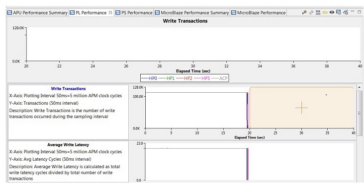

In the PL Performance tab, you can graphs of the metrics for the PL. For each metric, each port data is plotted in a different color.

The PL Performance tab graphs the following metrics:
Metric |
Description |
|---|---|
Write Transactions |
The number of write transactions within the specified time window. |
Average Write Latency |
The average latency (in HW cycles) for all write transactions within the specified time window. |
| Maximum Write Latency |
The maximum latency (in HW cycles) for all write transactions within the specified time window. |
| Minimum Write Latency |
The minimum latency (in HW cycles) for all write transactions within the specified time window. |
Write Throughput (MB/sec) |
The average throughput of the 64-bit data channel within the specified time window. Note that this is calculated using the number of write transactions, the bytes per transaction (as specified on the PL Traffic worksheet), and the specified time window (in usec). |
Read Transactions |
The number of read transactions within the specified time window. |
Average Read Latency |
The average latency (in HW cycles) for all read transactions within the specified time window |
| Maximum Read Latency |
The maximum latency (in HW cycles) for all read transactions within the specified time window. |
| Minimum Read Latency |
The minimum latency (in HW cycles) for all read transactions within the specified time window. |
Read Throughput (MB/sec) |
The average throughput of the 64-bit data channel within the specified time window. Note that this is calculated using the number of transactions, the bytes per transaction (as specified on the PL Traffic worksheet), and the specified time window (in usec). |